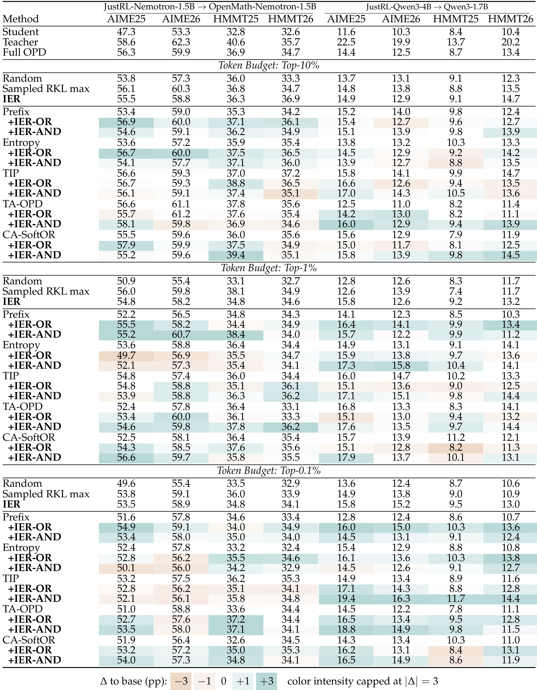
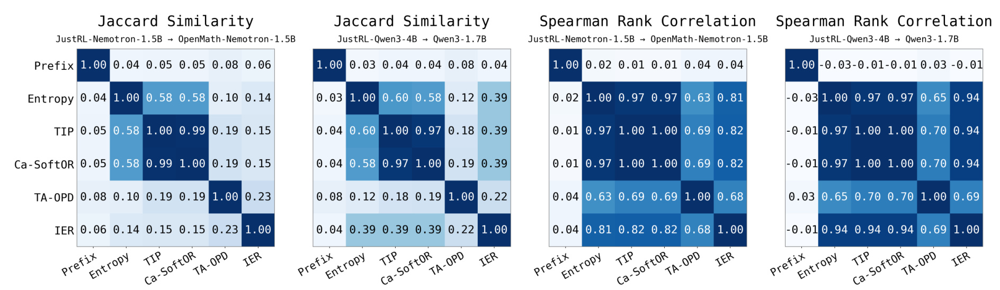
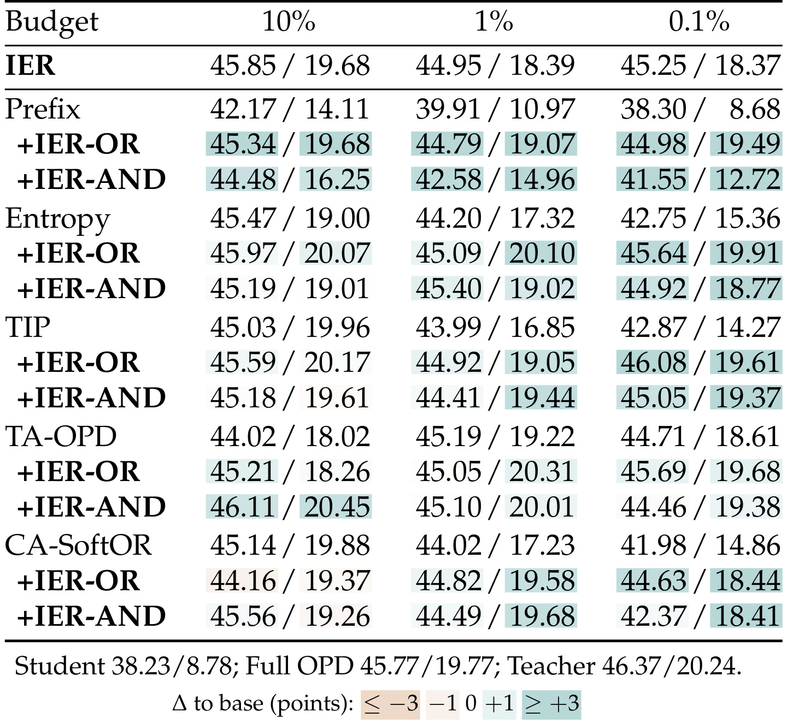
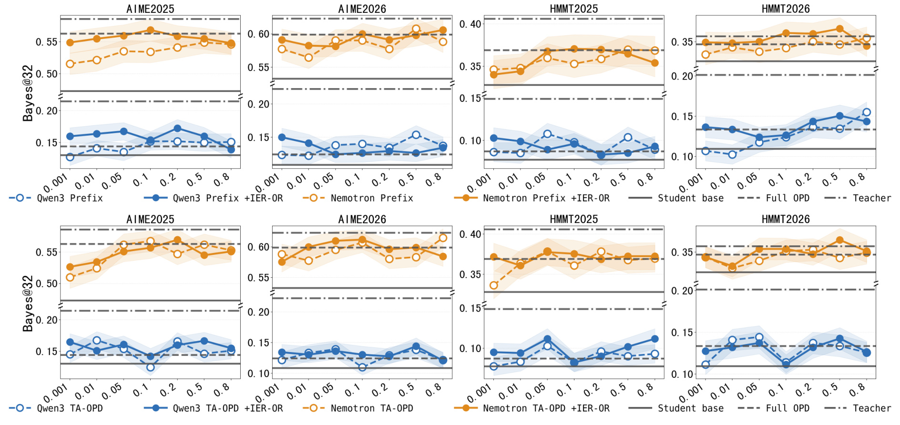
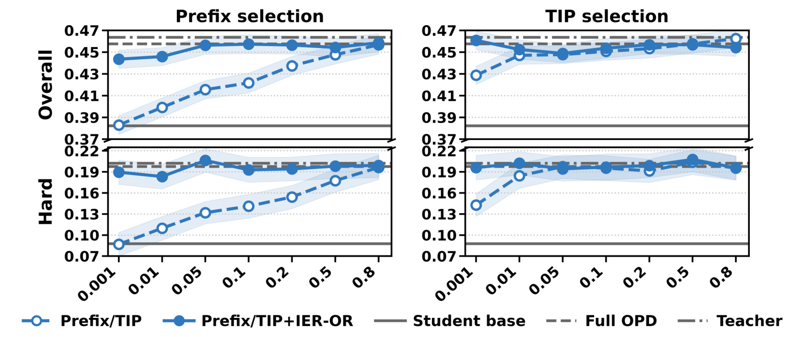
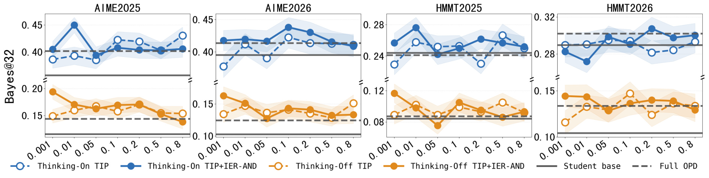
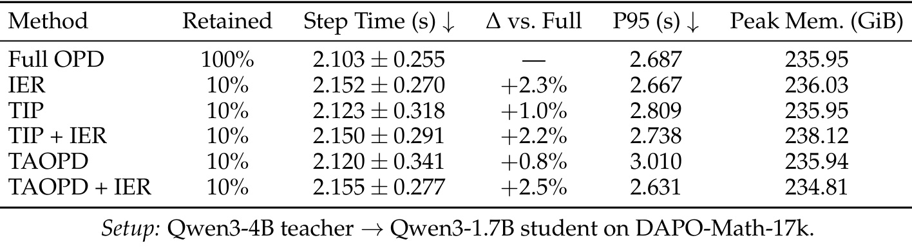
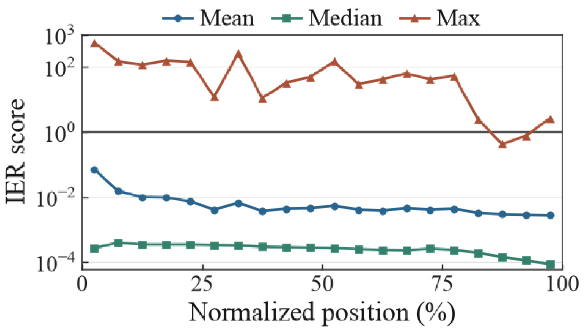

MBZUAI-IER-OPD：把蒸馏位置的有用性与梯度可靠性分开
论文：1% of Tokens Can Be Enough: On Gradient Estimation in On-Policy Distillation。作者：Huanxin Sheng、Zhiling Ye、Haonan Wang、Jian Wang、Jinjie Gu、Jian Kang。机构：MBZUAI，合作机构 Ant Group。首版公开：2026-09-21 11:28 UTC；本笔记核验日期：2026-09-23。来源：arXiv 论文入口。代码：IER-OPD，访问 HTTP 200，未运行复现。本文依据原始 29 页 PDF 主文与附录，归类为 LLM 后训练与稀疏在线蒸馏。
这篇论文给在线蒸馏的位置选择增加一个独立维度：教师在这个位置提供的纠正即使有用，用学生采样的一个后续 token 去估计它，也可能得到非常不稳定的梯度。IER 把这份估计可靠性写成信息几何中的信噪比，再与既有选择分数组合；训练本身仍采用 sampled reverse-KL。
核心问题是：有限监督预算应该分给哪些学生生成位置，才能兼顾纠正的价值与梯度估计的可靠性？论文的 1% 指被选中参与蒸馏更新的位置比例，不意味着教师前向、完整生成或总训练成本只剩 1%。
1. 背景和问题
在线策略蒸馏之所以受到关注，是因为学生实际生成时访问的状态，与教师离线给出的标准答案轨迹并不完全一致。离线模仿可以教会学生在正确前缀下继续回答，但一旦学生先前选择了另一种表述、推理路线或错误步骤，接下来遇到的前缀就可能偏离训练分布。OPD 让学生先生成，再让教师评价这些学生自己到达的前缀，训练信号因此贴近学生的真实行为。这里的基本监督单位是一个位置上的下一词分布，而不是只在完整答案末尾给一个正确或错误的标量反馈。密集词级指导能够指出教师和学生在哪里分歧，但也使“每个位置都要不要被同等对待”成为新的问题。
论文使用的标准参照是 reverse-KL 蒸馏，即以学生分布为采样分布，推动学生在自己会生成的候选上接近教师。对于一个固定前缀，完整梯度是对整个词表求期望。如果可以枚举所有候选，就能知道教师相对于学生在哪些方向上提高或降低概率。然而常见 sampled-token 实现只拿学生实际采到的一个或少量 token 来估计这份期望。同一个前缀如果重新采样，可能落到概率很高的常规候选，也可能落到概率很小但师生差异很大的候选，两个更新方向与幅度就可能相差很大。这种随机性不同于换一个问题带来的数据差异，也不同于教师本身回答不正确；它是估计器内部的采样误差。
已有稀疏蒸馏方法主要关注位置有没有用。最简单的 Prefix 优先保留回答前段，依据是后段推理可能已经受早先错误累积影响；Entropy 关注学生不确定的位置；TIP 结合不确定性和师生分歧；TA-OPD 又把教师对学生候选支持集的兼容程度纳入考量。如果学生已经十分确定且与教师一致，再给大量指导可能收益很小；如果学生的候选区域完全不被教师认可，直接强推差异也可能难以吸收。这些方法都有合理动机，却没有直接回答：选中的位置只采一个后续 token 时，这一次梯度能否代表整个分布的真实纠正方向？把分歧大小等同于更新质量，会把纠正需求与测量质量混为一谈。
一个直观情形是，两个位置的师生分歧都大，但第一个位置中不同候选给出的梯度方向比较一致，第二个位置的贡献主要来自极少数稀有候选。前者通过一次采样就比较可能获得有代表性的纠正，后者则可能长期没有采到关键候选，偶尔采到时又产生很大的波动。反过来，一个分布几乎已经匹配的位置，估计可能很稳定，却没有足够任务价值。因此可靠性不能直接取代有用性，这也是作者最终既比较 IER 单独排序，又比较与既有分数组合的原因。本文贡献的定位是增加一条选择轴，而不是声称从此不再需要任务相关的判断。
稀疏预算会放大这个区别。当整条轨迹的所有位置都参与更新时，许多局部估计误差可能在较大样本集合中部分抵消；当一个回答只剩极少数监督位置时，个别位置的噪声更容易主导整次更新。作者在医学实验的名义 0.1% 预算下大致每条回答保留一个 token，因此选择器实际上在做非常苛刻的资源分配：既不能错过关键纠正，也不能把唯一的监督机会给到一个估计噪声很大的位置。这解释了为何本文强调极小预算，而不是仅报告从百分之百缩减到一半的温和稀疏化。最难的问题是少量证据能否有效更新学生，而非单纯让损失张量变稀疏。
“可靠性”在这篇论文中有明确而有限的数学含义。作者固定一个学生生成前缀，研究下一 token 采样导致的梯度均方误差，并在 Fisher 几何下将其与平均梯度信号比较。它不直接衡量教师是否医学正确、推理是否符合事实，也不证明某个位置最终会提高测试任务准确率。即使理论公式完全成立，模型参数更新还经过从 logits 到参数的 Jacobian，不同位置之间也存在关联，而 rollout 分布会随着训练改变。把局部几何量用于跨位置筛选，是一个需要实验检验的迁移步骤。理解这一层级差别，才能同时承认其推导价值和工程近似的局限。
与已有方差缩减工作相比，本文没有把重点放在直接修改每个位置的梯度估计器。相关的控制变量方法会寻找基线，降低给定样本梯度的方差；作者借助最优标量基线定义一个可比较的参考可靠性，再利用它决定哪些位置应进入训练。实际训练保留原有 sampled reverse-KL 目标，因此“最优基线”首先是分析工具和选择分数的一部分，不能不加核验地描述为训练过程已完全实现自然梯度或最优控制变量更新。论文的理论、排序代理与训练目标是三个相连但不同的层次。
这项研究对后训练实践最直接的启发，是把 token 预算视为监督质量控制旋钮。它暂时并不是压缩模型、缩短上下文或降低线上推理时延的方法，也没有改变学生的部署结构。对于正在做数学推理蒸馏、领域助手适配的团队，可以在现有教师打分链路上增加排序诊断，观察既有选择器是否偏好高噪声位置；但如果主要目标是降低 GPU 成本，就必须额外设计真正跳过生成或教师计算的机制。论文附录主动给出效率测量，正好提供了区分“监督稀疏”和“计算稀疏”的实证基础，不应被标题里的极小百分比掩盖。
另一个容易忽略的比较条件是，稀疏方法与全量方法仍共享同类学生生成轨迹。这里不是从原始训练数据中删去百分之九十九的问题，也不是用少量标注回答替代全部回答；学生仍看到了完整前缀，上下文对选中位置的表示仍然有影响。没有直接损失的 token 不等于从计算图或输入中消失。只有明确区分输入上下文、教师打分位置和损失掩码，才能理解为何少量更新位置仍可能传递相当丰富的监督信息，也才能设计公平的复现实验。
2. 方法
2.1 固定前缀下的采样逆向 KL 梯度
方法首先把一个前缀上的师生分布单独取出来。学生和教师使用相同 tokenizer，支持集各概率为正；学生 logits 经 softmax 得到下一词分布。原文式（1）和（2）说明，reverse-KL 的 logits 梯度可以写成对数概率比乘 score function 的期望：
符号解释：前缀为 $s$，学生和教师概率分别为 $p_a=\pi_\theta(a\mid s)$、$q_a=\pi_T(a\mid s)$；$a$ 是下一 token，$e_a$ 是对应 one-hot 向量，$g$ 是对学生 logits 的梯度，$\phi_a$ 是对数学生概率的梯度。对 KL 求导原本还会出现常数一，但 score function 的期望为零，所以这一项消失。这里的目标不是序列级奖励最大化，而是固定状态上的分布匹配，后面的可靠性分析全部围绕这份局部梯度展开。
符号解释：$b$ 是与采样动作无关的标量基线，$\widehat g_b$ 为一次采样得到的梯度估计，$\delta_b$ 为其误差。减去基线不会改变期望，却会改变每种候选的随机贡献。作者考察的是这种误差可以有多大，而不是只要求估计器无偏：无偏意味着重复无限多次后平均正确，不保证当前这一次在小预算训练中足够好。映射到实际参数时，还要左乘 logits 对参数 Jacobian 的转置；因此本式为后续几何分析建立接口，却没有直接等同全模型参数噪声。
2.2 Fisher 几何中的信号、噪声与 IER
直接用欧氏范数测量误差，会把概率分布的不同坐标当成普通向量分量。作者转向 KL 在局部诱导的几何：一小步 logits 扰动所造成的分布差异，由 Fisher 矩阵近似度量。由于 softmax 对所有 logits 同时加常数不敏感，该矩阵存在零空间，必须使用伪逆而不是随意假设可逆。
符号解释：$\Delta z$ 是 logits 的小扰动，$p_\Delta$ 为扰动后的 softmax 分布，$F$ 是 Fisher 信息矩阵，余项表示高阶局部误差。对自然梯度差异做 Fisher 长度测量，等价于对普通梯度误差用 $F^+$ 范数测量，其中 $F^+$ 是 Moore–Penrose 伪逆。这是一种评价梯度可靠性的几何，并不是论文训练使用自然梯度优化器的声明。
符号解释：$\|v\|_{F^+}^2=v^\top F^+v$，Signal 是局部期望梯度的平方长度，右端是学生分布下师生对数比的方差。若所有候选上的对数比都相同，归一化分布实际上已经一致，信号随之退化；因此作者的定理讨论非恒定对数比情形。这里并非 KL 值越大 Signal 就按固定比例变大，分布内部差异的结构同样重要。
符号解释：$L(a)$ 为 leverage factor，$\mathrm{Noise}_b=\mathbb E_p\|\widehat g_b-g\|_{F^+}^2$ 是基线为 $b$ 时的均方估计噪声。低概率候选的杠杆更大，说明罕见采样在这一几何里可能很昂贵。噪声必须扣掉期望梯度自身的平方长度，不能把原始二阶矩直接当成纯噪声。这一分解同时解释了为什么只看分歧或熵不足：它们没有完整编码采样概率、对数比与几何杠杆的耦合。
符号解释：$b^\star$ 是在当前前缀、当前支持集下使标量基线噪声最小的选择；IER 用同一几何中的信号除以这份最小噪声。它允许在不实际反复采样下一词的情况下，通过分布统计估计单样本可靠性。高 IER 说明相对误差小，却可能对应绝对信号很弱的位置，因此不能把它直接称作学习价值。近零分母需要稳定处理，理论定义里的条件也不能在实现中省略。
符号解释：$\bar g_n$ 表示同一前缀下使用最优基线、独立采样 $n$ 次后平均的估计器。本式概括附录的相对均方误差结论；它不适用于把不同前缀、相关 token 或不同训练阶段简单混成独立样本。它给 IER 一个清楚的解释：在分析前提下，为同等相对误差所需的样本数与 IER 成反比。实际位置筛选正是借用了这个解释，而最终任务效果仍须由实验确定。
2.3 候选集近似与可靠性、有用性的组合
全词表统计在每个前缀上成本很高，因此工程实现构造学生 top-K、教师 top-K 和实际采样词的并集，在这个较小支持集上重新归一化。原文附录设 $K=16$，候选数量介于十六与三十三之间；两模型 top-K 不重合时，缺失 logits 用负十二填充，再对每个模型分别 softmax，而不是误把未提供候选概率设为零。
符号解释：$C$ 为候选集合，$z_\theta,z_T$ 为学生、教师 logits，$c,d$ 为集合内 token，带帽分布是受限支持集上的归一化分布。把采样词纳入集合，保证当前实际动作不会因为不在 top-K 中而丢失；并集也兼顾教师偏好而学生未覆盖的候选。重归一化后的分布不是原始完整分布，因此下面得到的是排序代理，而非理论全词表 IER 的精确计算。
符号解释：带帽杠杆和最优基线将前述表达中的分布换为候选分布得到；clip 把对数比限制在负三十至三十之间，分母采用 $10^{-8}$ 的最小值稳定除法。近似、截断和补齐 logits 都可能改变相对排名，因此理论无偏或最优性不能原封不动转移到筛选结果。作者使用 IER 的 batch 内归一化排名，降低不同数量级和重尾数值给组合带来的不稳定，而不是直接相加原始分数。
符号解释：$j$ 为 rollout batch 内位置，$u_j\in[0,1]$ 为归一化有用性分数，$r_j\in[0,1]$ 为 IER 排名分数，两种 $s_j$ 用于选择预算内最高分位置。OR 允许任一维度高分补偿另一维度，AND 则要求二者共同较高。所有回答在 batch 级共享预算，并保证每条回答至少一个位置，因此每条回答保留的比例并不相同。筛选输出为训练掩码，随后仍执行原始 sampled reverse-KL 更新；推理时不需要保留选择器，也没有增加学生网络模块。
3. 实验结果
3.1 两组数学蒸馏与主结果
数学实验包括同规模的 JustRL-Nemotron-1.5B 到 OpenMath-Nemotron-1.5B，以及 JustRL-Qwen3-4B 到 Qwen3-1.7B 的大模型到小模型蒸馏。它们都从 DAPO-Math-17k prompt 池训练五十轮 rollout，再在 AIME 2025、AIME 2026、HMMT-Feb 2025、HMMT-Feb 2026 上评价。每题采三十二个答案，报告 Bayes@32 均值与标准误；该指标口径不能直接改写成单次生成准确率。训练每批四个 prompt、每个十六条学生回答，总共六十四条回答，再拆成八个 minibatch。学习率为百万分之一，最大训练回答长度八千一百九十二，评测允许更长的三万二千七百六十八 token 回答。这种长度差别提醒我们，结论来自指定训练和解码设定。

表中左右两组列分别对应 Nemotron 同规模蒸馏和 Qwen 大到小蒸馏，每组四列依次为 AIME25、AIME26、HMMT25、HMMT26；纵向先给原学生、教师、全量 OPD，再分百分之十、百分之一和千分之一预算。青色和橙色表示相对于同组基础选择器的变化，并非相对 Full OPD，也不是显著性标记。最醒目的结果出现在 Qwen 的千分之一预算：TIP+IER-AND 得到 19.4、16.3、11.7、14.4，而 Full OPD 为 14.4、12.5、8.7、13.4，四列分别高出 5.0、3.8、3.0、1.0 个百分点。这个结果确实支持极少监督位置也可能优于全量位置更新，但它针对一个明确组合与设置，不能改写为任意模型只用千分之一 token 都更好。
Nemotron 的同一极稀疏预算则体现另一面：IER 单独取得 53.5、58.9、34.8、34.1，相对 Full OPD 的 56.3、59.9、36.9、34.7，有两项较接近但并没有全面超过。到百分之一预算时，TA-OPD+IER-AND 为 54.6、59.8、37.8、36.2，后两项高于 Full OPD，第一项仍低一些，所以“可比”比“全面胜出”更准确。失败组合也很清楚，例如 Nemotron 百分之一预算的 Entropy+IER-OR 在 AIME25 从基础 Entropy 的 53.6 降到 49.7。作者给出标准误大致在零点四到一个百分点，较小差值应谨慎判断；颜色很深的大收益值得关注，但不能只挑这些格子忽略其余任务。工程上这张表要求把模型对、预算和基础选择器作为联合配置验证，不能只复制一个全局默认 OR 或 AND。
还需要注意，表中随机选择是一个不可省略的参照。如果只把稀疏方法与未经训练学生比较，任何有效蒸馏都可能显得很突出，无法说明可靠性筛选本身有贡献。另一方面，只比较同一选择器加分前后的变化，也不能证明它超过了其他强选择器。因此阅读时应依次核对原学生、随机保留、全量蒸馏和同预算强基线四个层次。两个模型对中的原学生能力差距很大，也会影响可提升空间；右半表相对增幅较大不应直接解释为该方法天然更适合更小模型，还可能受教师质量、学生初始化和任务匹配程度影响。这些条件共同限定了表中最好数字的外推范围。
3.2 为什么高相关排序仍会选出不同位置

四个热力图分成两组：左侧是两个模型对各选择器 top-10% 集合之间的 Jaccard，相交集合越大颜色越深；右侧是所有位置排序的 Spearman 相关性，表示整体次序是否趋同。两种统计回答不同问题：整体排序高相关，只要最顶端附近有足够交换，就仍可能让真正参与稀疏更新的集合截然不同。以 Nemotron 为例，IER 与 TIP 的 Spearman 为 0.82，看上去相当一致，但 Jaccard 仅 0.15；与 Entropy 的相应值是 0.81 和 0.14。Qwen 中 IER 与 TIP 的 Spearman 更高达到 0.94，top-10% Jaccard 也只有 0.39。因此可靠性轴确实会改变最终监督位置，而不是把已有有用性排序乘一个几乎不影响结果的常数。
Prefix 与多数分数相关性很弱，符合它主要依据位置顺序而不读取局部分布的性质。TIP 和 CA-SoftOR 在两个模型对中的整体相关性接近一，top 集合重叠也很高，这提示部分看似不同的启发式实际上会把预算花在近似相同位置。把 IER 混入这些选择器仍可能产生新信息，原因不在于它与其他分数完全独立，而在于极端选择区域的差异。原文还指出预算进一步缩小时重合度会下降，这与极稀疏结果中组合增益更明显的现象相容。
这幅图是机制相关证据，不是因果证明。不同集合本身不会保证更好的任务效果，也没有直接展示每一个被替换位置的真实参数梯度误差。它支持的是“有用性排序与可靠性排序并不等价”，随后必须由主表证明这种差异在某些设置中有收益。复现时既要保存所有位置分数的秩相关，也要记录实际掩码集合和每条回答的保留数量，否则只看到高相关性很容易误判两个选择器冗余。尤其在至少保留一个位置的规则下，一些回答的尾部候选可能因全局预算竞争被挤出，需要同时检查回答覆盖与位置覆盖，才能解释成绩变化来自哪一类监督重新分配。
3.3 医学开放回答是否仍有效

医学任务使用 ClinAlign-4B 教师到 Qwen3-4B 学生，训练数据为 RaR-Medicine，进行一百轮 rollout。每个单元格斜杠前后分别是 HealthBench 总体与 Hard 分数，三列仍是百分之十、百分之一、千分之一名义预算。学生为 38.23/8.78，Full OPD 为 45.77/19.77，教师为 46.37/20.24。在最低预算下，IER 单独为 45.25/18.37，已经明显超过原学生，但 Hard 仍低于 Full OPD；TIP+IER-OR 为 46.08/19.61，与 Full OPD 相当接近；TA-OPD+IER-OR 为 45.69/19.68，也落在邻近区域。这里应分别读取两个指标，不能只取总体高于 Full OPD 的一个数字便宣布全面更优。
Prefix 是组合修正最明显的例子。最低预算的基础 Prefix 为 38.30/8.68，几乎停留在原学生水平；加入 OR 后成为 44.98/19.49，总体提高 6.68 分，Hard 提高 10.81 分。因为 OR 可以接纳可靠性很高但不一定最靠前的位置，它有机会弥补过度依赖回答开头的局限。AND 的同设置结果只有 41.55/12.72，说明强制同时靠前且可靠可能限制太严。另一方面，最高预算的 TA-OPD+IER-AND 为 46.11/20.45，接近教师总体并略高于教师 Hard，但标准误约为总体零点五、Hard 一分，不能凭零点几的差值做统计胜负判断。CA-SoftOR 在百分之十预算加入 OR 后总体反而从 45.14 降至 44.16，这也是组合并非普遍改良的直接反例。
医学评价使用 gpt-oss-120B 自动裁判，其 HealthBench meta-evaluation 宏 F1 为 0.6614；论文说明默认 GPT-4.1 裁判更高为 0.709，但大规模实验成本受限。因此这些成绩是在论文指定裁判下的可比较结果，并不是临床效果或真实诊疗安全性的直接证据。医学数据让作者的方法不只依赖数学最终答案的规则验证，这拓展了证据范围；同时也引入裁判误差、评分偏好与开放答案质量难以完全量化的问题。有效的领域蒸馏仍需要核对危险建议、遗漏信息和适用人群，本文的 token 选择实验没有消除这些评价缺口。
此外，表中的预算是名义预算，保留每条回答至少一个位置的下界在极短回答时可能改变实际比例，比较医疗任务时也应记录真实保留数量。
3.4 预算曲线与非单调行为

图的四列仍对应四个数学基准，横轴以比例表示从千分之一到百分之八十的监督预算，纵轴为 Bayes@32；橙色为 Nemotron、蓝色为 Qwen，空心虚线是基础选择器，实心曲线是加入 IER-OR。上排比较 Prefix，下排按实际图例比较 TA-OPD。这里需要指出原文的一处标注不一致：Figure 3 caption 把下排写成 TIP，但图例与该节正文均显示 TA-OPD，本笔记按图例解读而不替作者消除这个差异。图内还有学生、Full OPD、教师的水平参照线，纵轴断开意味着两种模型的数值区间不能按视觉距离直接作倍率比较。
Prefix 在小预算下通常弱于加入 IER 的版本，尤其是 AIME25 的低预算端，实心线相对空心线更高。随着预算增大，基础 Prefix 有机会覆盖到更有价值的位置，差距因而缩小或变化。TA-OPD 的结果则没有这样整齐：某些点加入 IER 提升，某些点相近或下降，Qwen 的曲线明显起伏，说明更多监督位置并不保证成绩单调增长。这一现象与论文动机相容，低可靠性位置可能稀释有效更新；但它本身也可能包含训练随机性和有限评价样本造成的波动，不能把每次下降都归因于噪声累加。阴影给的是百分之九十置信区间，重叠区域尤其不适合肉眼排强弱。
预算曲线的价值在于避免主表挑点误导。只看某个最佳百分之一或千分之一结果，容易把一个配置的局部高点误当成整个预算范围的规律；连续扫预算后可以看到优势主要出现在哪里，是否在邻近预算保持，以及不同任务是否共享一个合理区间。对工程实验而言，至少需要包含全量、极稀疏和中等预算，并固定 rollout 和优化步数；如果同时减少生成长度，就把位置选择和数据变化混在一起了。本图也没有给出以算力为横轴的性能曲线，因而不能用曲线左侧的好成绩声称训练效率提高了若干数量级。横轴衡量的是被保留的监督位置，而不是完成训练所消耗的 GPU 小时。

医学曲线左列是 Prefix，右列是 TIP；上排为 overall，下排为 Hard，虚线空心为原选择器，实心为加入 IER-OR。左列很好地显示了为什么最低预算的 Prefix 主表结果很差：原方法随着预算增加从学生附近逐渐向 Full OPD 靠近，而加入 IER 后在很小预算就达到较高水平，之后变化相对平缓。Hard 子集上的分离尤其大，说明这一设置中仅监督最前面少数位置无法有效传递复杂问答能力。右列 TIP 在最低预算也受益，但从更高预算开始原方法已经较强，两条线更接近，有些位置还会交叉，不能把 Prefix 的大增益直接套到所有有用性选择器。
水平线分别给学生、全量蒸馏和教师参照，实心曲线围绕全量线浮动不代表教师被系统性超越。阴影是百分之九十 bootstrap 置信区间，许多接近的点有明显重叠，应当把它们解读成相近表现。overall 和 Hard 使用不同的纵轴范围，Hard 的数值更低不等于单位难度或临床风险可以按比例换算。图还体现一个实用事实：在已到平台区域后，增加预算主要扩大接受监督的位置集合，却没有持续提高评分；因此为每个任务保留预算扫描，比盲目认为教师信号越多越好更有意义。
这一观察为“可靠性补充有用性”提供跨任务支持，但没有推导出自动确定最优预算的算法。部署研究时，仍然需要独立验证集选择预算，避免在 HealthBench 测试结果上挑选最优组合后报告过于乐观的成绩。如果想得到可迁移配置，可以先比较低预算附近曲线的稳定区域，再检查不同随机种子下的范围；这属于本笔记的实验建议，原文没有提供一个普遍可用的自适应阈值。医学曲线也说明只看全局均分会错过重要结构：同一个选择器在 Hard 上可能更依赖可靠性校正，而其总体评分的差异并不总是同等显著。
3.5 开启思考后的迁移边界

这幅图固定 JustRL-Qwen3-4B 到 Qwen3-1.7B 模型对，比较 TIP 与 TIP+IER-AND，在开启和关闭 thinking 两种模式下的预算曲线。蓝色是开启思考、橙色是关闭思考，实线表示加 IER，虚线表示基础 TIP；四列对应四个数学基准。开启思考后生成轨迹的长度与结构发生变化，推理 token 也参与选择，因此它检验的是同一可靠性思路能否面对另一种 rollout 分布，而不是只切换一个不影响训练数据的展示选项。纵轴有断开区域，两种模式明显不同的基准能力必须分别相对于自身 Full OPD 参照读取。
论文归纳认为，小预算尤其千分之一和百分之一时，加入 IER 通常更有益；关闭思考模式下，稀疏方法经常达到或超过全量蒸馏，开启思考时基础 TIP 在小预算更容易弱于全量，而加入 IER 可补回部分差距。图中 AIME25 的百分之一预算蓝色实心点高于虚线较明显，但 HMMT26 同处也可以看到实心点低于部分参照，不能把所有数据集描述成一致上升。随着预算变大，两条线又出现交替领先，仍然没有单一规则支配所有点。这与主表中 OR、AND 依赖任务和模型对的结论一致。
这个结果最有价值的地方，是提醒复现者不要只在短回答、非思考模式验证位置筛选。长链推理可能包含探索、检查、改写和最终结论，哪些位置的局部梯度估计可靠，不必与它们在人类看来是否“关键步骤”一致。本文没有直接标注各 token 的推理功能，也未证明选择器保留了完整的因果推理链；它通过最终成绩说明某些稀疏更新足以改善学生。若目标是保持推理可解释性、长程规划或工具调用稳定性，还需要另设行为指标。图中百分比也不反映开启思考后绝对监督 token 数与生成时间如何变化，跨模式比较成本必须另行统计，不能只比较同一个百分比标签。
3.6 真实成本与位置分布

效率表是理解标题的必要证据。实验使用 Qwen3-4B 教师与 Qwen3-1.7B 学生、DAPO-Math-17k，统计三十个稳态 rollout 步的平均时间和标准差，同时给出 P95；峰值显存是八张 GPU 的聚合值，并非单卡显存。Full OPD 保留百分之百 token，平均步时为 2.103±0.255 秒；IER 保留百分之十，平均为 2.152±0.270 秒，即增加 2.3%。TIP+IER 为 2.150 秒、增加 2.2%，TAOPD+IER 为 2.155 秒、增加 2.5%。聚合显存最大增加出现在 TIP+IER，相对全量从 235.95 GiB 到 238.12 GiB，即增加 2.17 GiB，约百分之零点九二。
这些结果明确否定了“监督只剩十分之一，所以训练也快十倍”的解读。作者仍然生成完整学生轨迹，并在完整轨迹上评价监督质量，然后额外计算评分与掩码；没有剪枝、截断或跳过教师所需打分。因而当前实现的稀疏性主要改变哪些位置贡献更新，并不按比例减少前向链路。某些方法 P95 比 Full OPD 低，但平均值略高，而且时间分布有波动，不能用一个较低尾分位数覆盖平均成本。论文的结论是额外开销较小而不是计算节约已兑现。更低预算的性能结果也不能从这张只报告百分之十设置的效率表外推得到准确成本。
这张表使 IER 的应用位置更清楚：如果已有完整教师 logits，并希望提高固定训练预算下的学习质量，增加选择计算可能可以接受；若教师服务调用最昂贵或长轨迹生成是瓶颈，必须先解决如何在未完整打分时决定哪里值得打分。把选择器提前到生成过程中，会带来信息不可得、前缀偏移和预算控制的新问题，不能简单复用离线选取后的结果。原文将依据可靠位置数量截断轨迹列为未来方向，本笔记也把它视为尚未验证的系统设计，而不是已完成的训练加速。

横轴将回答位置归一化为百分比，纵轴是对数尺度的 IER，三条曲线分别表示均值、中位数和最大值。均值大体随位置向后下降，中位数在非常低的量级缓慢变化，而最大值远高于另外两者并有尖峰。这种分离体现作者所说的重尾性：少数位置具有很高的候选集近似可靠性，但典型位置的 IER 很低。不要把最大值曲线理解成多数 token 的表现，也不要把对数坐标上的小距离当成很小的倍数差异。图中阈值一可以帮助理解信号和噪声的相对关系，但这是近似分布与数值稳定规则下的量，不是真实训练参数误差的直接测量。
较早位置通常更可靠，为 Prefix 选择提供了一部分统计依据，却也显示固定前缀选择为什么会错过信息：最大值在中段仍有明显峰值，而后段并非所有位置都严格低于前段。一刀切保留前面若干 token 会丢掉这些例外，IER-OR 则能让可靠位置越过位置规则进入监督集。均值下降与最终学习价值也不是同一个概念，后段虽然局部估计可靠性低，仍可能包含关键答案或错误修正；所以不能据图断言所有晚期 token 都应移除。作者只提出未来可在积累足够可靠位置后尝试截断，没有展示该策略保留任务效果的实验。
结合效率表，这个位置统计给出了后续研究的具体接口：先观察可靠性随生成进度如何变化，再研究是否能用前缀可见信号预测剩余高价值位置。但这需要校准候选近似误差、长短回答差异和任务类型，尤其应避免某些问题因较晚才出现可靠位置而过早终止。附录其余六幅选择器排名图重复展开主表的双模型、三预算结果，本笔记没有逐张重复截图；其中与 sampled RKL max/min 的比较也表明，没有一种选择器在所有六种设置中始终最优。可靠性是一条有价值的新轴，尚不是已经解决的普适监督调度策略。
4. 总结
我的判断是，本文最扎实的贡献不是“只用百分之一”的宣传数字，而是把采样蒸馏中长期混合讨论的两个问题拆开：监督是否指向有用的纠正，以及有限样本是否能可靠估计这份纠正。固定前缀的 Fisher 分解给了后一个问题明确的度量，主实验又证明该度量与既有启发式组合时，在若干极稀疏设置下具有可观察的增益。数学与开放式医学两个领域、同规模与大到小两类模型对，让证据比单一任务上的最佳数字更完整；同时作者保留了失败组合与效率开销，便于读者判断可以迁移的部分。
适合尝试的场景是已经具备 OPD 管线、完整教师打分和可靠离线评测，希望改善监督位置选择的团队。复现顺序应先对齐全量 OPD 与基础选择器，然后复现相同 batch 预算和每回答至少一个 token 规则，再增加 IER 单独、OR、AND 三条支路。需要保留学生/教师 top-K 并集、缺失 logits 填充值、对数比 clipping 和分母下界，任何一个数值处理不同，都可能改变重尾排序。训练优化器仍是论文的 Adam 设置，不应把信息几何分析误实现成额外自然梯度训练，造成与论文完全不同的算法。
局限至少有四类。第一，局部 logits 几何没有涵盖参数 Jacobian、跨前缀梯度冲突和多轮 rollout 分布变化，因此可靠性不直接保证最终损失下降。第二，top-K 近似遗漏低概率长尾，并通过负十二补齐与重新归一化改变分布；原文未给所有任务上的近似排序误差界。第三，OR 或 AND 选择依赖模型对和基础分数，Entropy 的下降例子说明不能默认通用增益，需要额外验证成本。第四，医学裁判并非完美，而且实验是自动基准评分，不是临床验证。第五，训练轮数与模型规模范围有限，尚不能据此宣称大规模长期蒸馏、工具智能体或多模态模型也会得到同样收益。第六，完整轨迹和教师打分保留，使当前系统略增而非减少步时，监督预算百分比不能替代成本账本。
下一步值得跟进三个可检验问题。首先，在一小批可枚举完整 logits 的前缀上，比较候选 IER 排序与全词表 IER 的一致性，并扫描不同 K 和缺失填充值；这能区分理论可靠性与工程近似何者真正驱动效果。其次，对实际被选位置测量多次采样的梯度波动，同时分解绝对信号大小、任务收益和相对误差；否则高 IER 可能只是某些弱但稳定位置的统计特征。再次，把生成、教师前向、评分排序和反向更新时间分开，尝试可因果执行的提前停止策略，并重新验证困难问题的损失；这才可能把监督稀疏转化为真实算力节约。额外还应关注验证集选择配置是否稳定，避免用测试集遍历多种 OR/AND 组合得到乐观结论。
最终可以保留的结论是：在论文给定的数学与医学蒸馏设置中，兼顾有用性和梯度估计可靠性，能够让很小的监督位置预算产生接近或超过全量 OPD 的成绩。不能保留的扩展结论包括“所有任务只需百分之一数据”“训练成本下降百分之九十九”或“可靠性分数可以证明教师指导正确”。本笔记没有执行训练复现，数值均来自论文原表；Figure 3 的下排 caption 与图例不一致也已保留说明。后续价值应看这些边界上的实验是否得到补齐，而不只看更小预算能否再刷新一次最好数字。